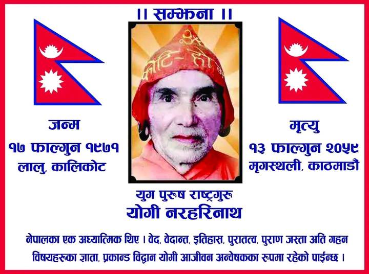

योगी नरहरीनाथको जीवनी
राष्ट्रगुरू योगी नरहरिनाथको जन्म वि.सं.भएको थियो। उनका पिताको नाम ललितसिं १९७१ फागुन १७ गते कालिकोट लालुको चाखा भडारीबाडामा ह थापा र माता गौरा देवी हुन् । योगीको बास्तविक नाम बलबीर सिंह थापा थियो। भारद्घाज गोत्री बझाङ्गी सिंह ठकुरीहरू कै बंसजका सन्तती हुन र पछि थापा पद सुरक्षाकर्मीका रुपमा राज्यको दायित्व लिदा पाएको कुरा उनका परिवारजनहरूको दावी छ। योगी नरहरिले लेखेको राष्ट्र गीताकै रुपमा रहेको शिखरिणीयात्रा भन्ने पुस्तकमा उनले सतब्रत भन्ने शब्द उल्लेख गरेका छन। सतब्रत भनेको मान्छेको मृत्युपछि हुने पुनर्जन्म हो।
यथार्थमा २०५९ फागुन १४ गते ब्रह्मलीन योगी नरहरि कतै फेरि जन्मेका छन छैनन् तर कालीकोटका प्रतिभाशाली युवाहरूको मृगस्थली भेलाले योगी नरहरिको पुनर्जन्म गराएको छ। योगीलाई ललितसिंह थापाले ८ वर्षको उमेरमा मालिका, कैलाश, खप्तड आदि तीर्थहरू जुहार्न लगेकै कारण कतै दैवी कृपा हुन पुगेको र बालक बलवीरलाई लेखपढ् गराउन भनेर योगीका मूलगुरु महन्त क्षिप्रानाथले १३ वर्षको उमेरमा जुम्ला जिल्लाको सान्नी रास्कोट दराको लालुगाउँबाट खलंगा लिएर गए ।
त्यहाँ केही समय उनलाई भैरवनाथको मन्दिरमा पढाउने क्रममा राती टुपी सिलिङको दारमा डोरीमा बाँधेर निन्द्रा भगाउदै पढिरहेको देख्दा यो गोरखनाथ जस्तै सन्त बन्छ भनेर गदगद भएका थिए। क्षिप्रानाथले नै बलवीरलाई कन्फटा जोगी बनाए र बनारस, हरिद्वार, खन्ना हुँदै योगीले मद्रासको संस्कृत विश्वविद्यालयबाट बी.ए. अनर्श गरे। त्यसपछि तिब्बतदेखि #श्रीलंकासम्म_र_अफगानिस्तानदेखि_म्यानमारसम्मका मठमन्दिरहरूमा सत्संग गर्दै इतिहास, भाषा र संस्कृतिको अथाह ज्ञान आर्जन गरे । त्यसक्रममा उनलाई प्राचीन लिपी जान्नु पर्ने भएकोले केही समय #उज्यनको ( Vikramaditya University 1957, Ujjain, Madhya Pradesh) #विक्रमादित्य #विश्वविद्यालमा गएर पुरातत्वको अध्ययन गरे। त्यसपछि योगी हिन्दूहरूको देशलाई पहिले मुसलमान र अहिले कृश्चियनहरूले कब्जा गरेको भन्दै जताततै बिद्रोह मच्चाउन अग्रसर भएर अगाडि बढे।
दूर हटो रे दुनिया वाले ! हिन्दुस्ताँ हमारा है !! भन्ने नारामा योगीको विद्रोह चल्यो। ठाउँ ठाउँमा उनी गिरफ्तार भए। उनका पिठ्युभरी अंग्रेजहरूले पिटेका घाउहरू स्वयम् देखेको योगीका निकटस्त चेला गोविन्द काफ्लेले भन्ने गरेका छन। उनलाई कराचीमा जहाँ उनी सात वर्ष जेल बसेर सन् १९४७ मा रिहा भएका थिए त्यहाँ उनलाई मारेर कुहिएका लासहरूको वीचमा खाँदेर फाल्दा पनि बाँचेर आएका थिए। २ वर्ष हिन्दुस्तान पाकिस्तानको सीमानामा मुसलमानहरूले मारेका हिन्दूहरूका लासहरू सतगत गरेर बसे। नाथुराम गोड्सेले करमचन्द गान्धीलाई गोलीठोकेर मारेपछि पाकिस्तानबाट लासहरू आउन बन्द भए ।
त्यसैले हरिद्वारमा नुहाएर हिमालयतिर तपस्या गर्ने योजनामा रहेका योगीलाई नेपाल दरवारबाट बबर शमशेरले लिन पठाएका मान्छेहरूले भेटे। योगीको जीवनमा एउटा कुरा साह्रै खड्केको थियो। हिन्दुस्तानलाई अंग्रेजहरूले छोड्नासाथ करमचन्द गान्धी र जवारलाल नेहरुले इतिहासकार राहुल सांकृत्यायनसँग मन्सुरीको होटेलमा तीन दिनसम्म गोप्यरुपमा मन्त्रणा गरी हिमालयदेखि समुन्द्रसम्म नै अखण्डभारत थियो भनी आसपासका स्वतन्त्र देशहरूको इतिहास मेटाउने सल्लाह गरेका थिए। त्यसै अनुसारका पाठ्यसामग्रीहरू बनेर आउँदा त्यहाँका नेपाली विद्यार्थीहरूले डिल्लीरमण रेग्मीको नेतृत्वमा बिरोध जनाएका थिए जसलाई योगीले पनि साथ दिएका थिए ।
त्यसैले राणाहरूको निम्तोलाई स्वीकार गरेर वि.सं. २००२ मा योगी नेपाल फर्के । नेपाल आएपछि उनले स्वतन्त्र राष्ट्रको इतिहासको निर्माण गर्न व्यापक रुपमा अनुसन्धान सुरु गरे। केही राजघरानाहरूका बृत्तान्तमा सीमित नेपालको इतिहासलाई उनले आफ्नो अध्ययन र इतिहासको चेतनाका आधारमा नयाँ तरिकाले उत्खननको प्रारम्भ गरे। सर्वप्रथम उनले नै गोपाल वंशावलीका आधारमा नेपालको विस्तृत ऐतिहासिक सम्भावनालाई आधार बनाए। २०१२ सालसम्म उनी दुल्लु पुगिसकेका थिए र त्यसैबाट त्यहाँको कृतिखम्बमा उल्लेखित सिंजाका खस राजाहरूको र कर्णालीको पछिल्लोे इतिहास पत्ता लगाए। उनले त्यसपछिको जुम्ला साम्राज्य र त्यसअघिको मनुको राजधानी मान्मा अथवा मानमीको इतिहासका बारेमा पनि केही न केही उल्लेख गर्न सफल भए। कैलाश कर्णाली खण्डमात्रै होइन योगीले नेवार, किराँत, मगरात,अवध, मिथिला, थरुहट, तमुवान, ताम्सालिङ आदि नेपालका विविध राज्यहरूको विभिन्न कालखण्डको इतिहास विना कुनै प्रवाह निर्माण गरे ।
आइने अकवरीका आधारमा नेपाल दिल्लीबाट शासित थियो भन्ने राहुल साँकृत्यायनको जाली तर्कलाई उनले जुम्लाका ताम्रपत्रहरूका आधारमा नेपालको शासन व्यवस्था मौलिक भाषिक संरचनामा आधारित रहेको प्रमाणित गरे। योगीले नेपालको स्वतन्त्र स्वाधीन र अक्षुण अस्तित्वको ऐतिहासिक प्रमाणहरूले पुष्टी गर्दै गएपछि नेपालमा इतिहास निर्माणको आन्दोलन नै चल्यो। योगीले स्वाधीन इतिहासमात्र होइन उनले स्वाधीन राष्ट्र निर्माणका लागि राजनैतिक चेतना पनि निर्माण गरे। अंग्रेजहरूबाट हिन्दुस्तान स्वतन्त्र गराएर आएका योगीले यहाँ बैदेशिक चलखेल बिरुद्ध व्यापक रुपमा आफ्ना विचार दिन थाले ।
योगीले सुगौली सन्धिलगायत सन् १९५० को मोहन शम्सेरले गरेको सन्धिको पनि कमिकमजोरीहरूको सार्वजनिक रुपमा विरोध गर्न थालेपछि विदेशीहरू योगी नरहरिमाथि खनिए । २००८ को कोशी र २०१६ को गण्डक सम्झौता अनि विदेशी डाल्डा घ्यू भित्र्याउने जस्ता #राष्ट्रघाती_कामकार्वाहीको उनले खुलेर बिरोध गरे। योगीका विपक्षीहरूले उनलाई राजाबाट सञ्चालित भने र अनेक तरिकाले बदनाम गरे र गोर्खाको जनविद्रोहको नेतृत्व उनले गरेपछि उनलाई समातेर मार्ने योजना गरियो। भागेर जुम्ला पुगेका योगीलाई हात्तीले कुल्चाउने, नदीमा खसाल्ने केही गर्दा पनि नमरेपछि उनलाई हिलै हिलो भएको छिडीको साप र बिच्छी लाग्ने कोठामा भैरहवा लगेर भोकभोकै थुनियो तर उनको ध्यान र योग शक्तिले उनी बाँचे।
त्यसरी नै पञ्चायत कालमा उनले लर्डमैकाले शिक्षा पद्घतीको बिरोध गरेर पूर्वीय सभ्यता,भाषा र संस्कृतिको रक्षाकालागि दाङमा दानबाट बाह्रहजार विघा जमीनमा संस्कृत विश्वविद्यालय खडा गर्न सफल भएपछि काठमाडौं कब्जा गरेर बसेका योगीका शब्दमा इसाई, मुसाई, कसाई र चुसाईले उनलाई फेरि २०३२ सालमा गिरफ्तार गराए र कारागारमा मार्न खोजे ।
तीनचोटी मार्न खोजिए पनि नमरेका र इच्छा मृत्यु भएका योगी महाकवि, ब्रह्मज्ञानी, योगेश्वर, गोरखनाथकै अवतार मानिन्थे । भाषाविद्, संस्कृतिविद मात्र नभएर उनी संस्कृत भाषाका कसैले पढ्न नसक्ने व्याख्या गर्न नसक्ने दुरुह लिपी र लेख्यहरूको पनि सरल व्याख्या गर्न सक्दथे। कसैले नदेखेको यती भेटेर फोटो खिचेर मानव जातिको त्यस पूर्खाको विविध वर्णन गर्न पनि उनी सफल थिए। उनले यस पंतिकारलाई धेरै अमृत तुल्य जडिबुटी प्रयोग गर्न सिकाएका छन् । उपचारको हकमा उनी धन्वन्तरी कै अवतार मानिन्छन्। नेपालमा विदेशी विधर्मीहरूको षड्यन्त्रले उनी थुनिएपछि त्यो कुरा राजमाता श्री ५ रत्नलाई थाहा भएपछि राष्ट्रगुरूलाई थुनेकोमा उहाँबाट विरोध भयो र रिहा भएका थिए।
पछि उनी रिहा भए र तत्काल भारतकी प्रधानमन्त्री इन्दिरा गान्धीले बोलाएर दाङको बदला बाबागञ्जमा संस्कृत विश्वविद्यालय स्थापना गर्न अनुरोध गरेकी थिइन। योगी नरहरिनाथ जागरुक सन्त मात्र थिएनन् कहिल्यै नझुक्ने र देशकालागि बलिदान हुन सँधैै तत्पर महान सपुत थिए। उनको प्रसंसा जति गर्दा पनि उनको योगदानहरूको तुलना नगन्य हुन्छ। उनी विश्वका २७ भाषा बोल्न सक्थे, जब की राहुल सांकृत्यायनले २१ भाषा बोल्थे भने विनोबा भावेले १७ भाषा बोल्थे। ५७३ पुस्तकका लेखक योगीका हाल ३५९ कृति मात्रै उपलब्ध छन्। योगी नरहरिनाथका बारेमा विदेशी विधर्मीहरूका षड्यन्त्रले गर्दा सिंहदरबार उनका बिरुद्घ सधै लागेको पाइन्छ।
yogi naraharinath
kalikot nepal